| 日付 | 2009年10月17日（土） - 2009年10月18日（日） | ||||
|---|---|---|---|---|---|
| 山域 | 日光周辺 | ||||
| メンバー | グループ（男2女2） | ||||
| 山行形態 | 1泊2日無人小屋泊 | ||||
| アクセス | 電車、バス | ||||
| ルート (Map) |
|
2日目
5時半に小屋を出発する。この季節は5時半でもまだ周囲は薄暗い。
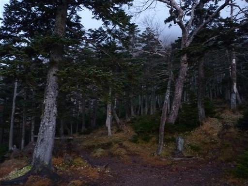
今日も思ったほど天気がよくなく、辺りには雲が立ち込めている。
予報は晴だったので、太陽が出てくると青空が広がることを期待。
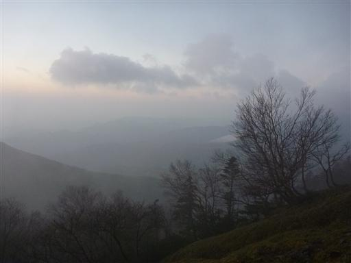
雲の中から太陽が顔を出す。
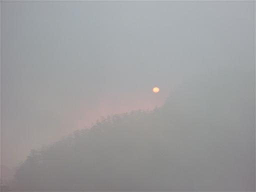
太陽が出ると見る見る雲が消えていき、丸い頭の三山が朝陽に照らされる。
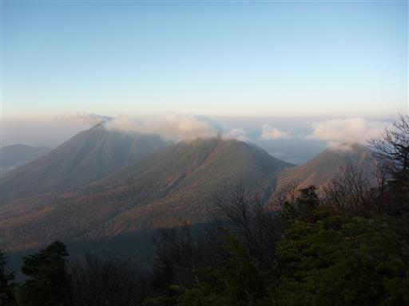
6:18 女峰山山頂到着。標高2483m。
大展望が広がる待望の山頂だ。
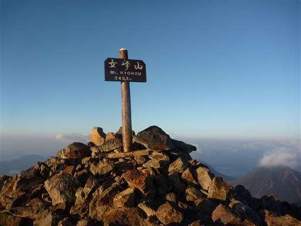
この時間帯はまだ霞んでいて鈍い展望だが、360度遮るもののない展望が広がっている。
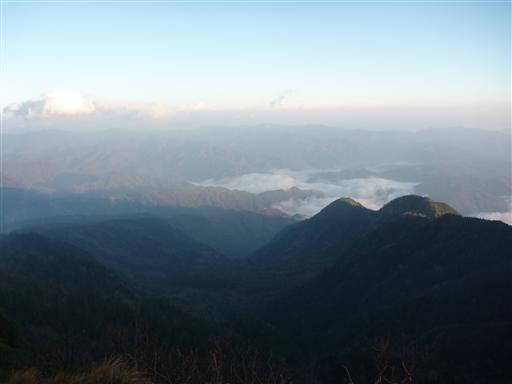
山頂直下には小さな神社がある。
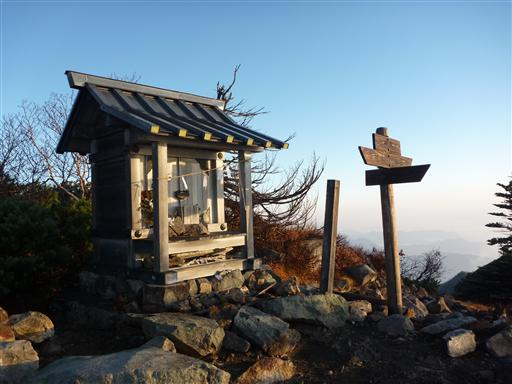
山頂で30分ほど滞在し、下山を開始する。
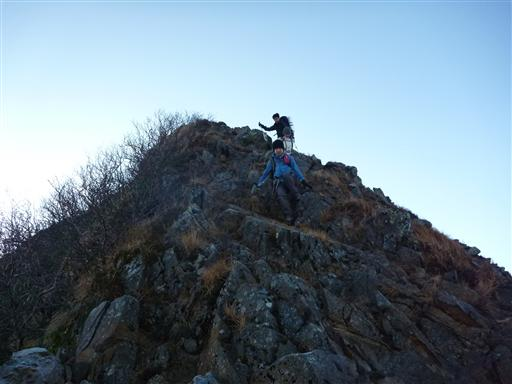
女峰山から帝釈山に続く稜線は馬の背と呼ばれる痩せ尾根だ。
樹木はなく両側が切れ落ちているため、高度感がある。
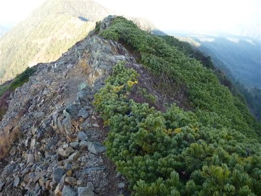
振り返ると女峰山が鋭角に聳えている。存在感のある格好いい山だ。
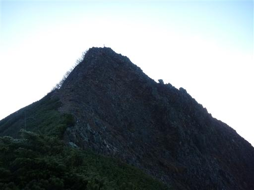
道端にはクロマメノキの実がなっている。
食べると少々酸味があるが、余りおいしくない。
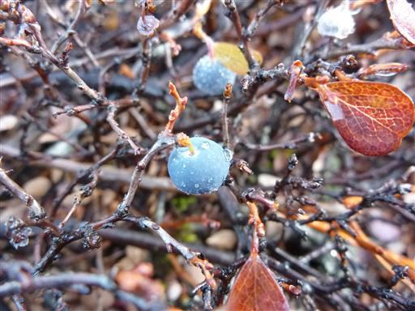
細い稜線の向こうに帝釈山が見えている。
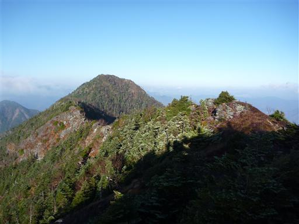
地面に積もる葉は霜で真っ白に染まっている。
ただでさえ寒いのに、余計に寒くなってくる。
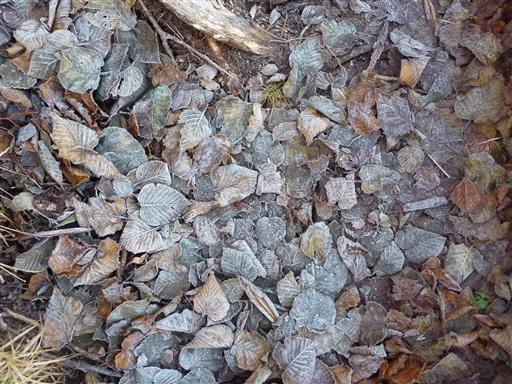
帝釈山に到着。独立したピークというより女峰山の一部だ。
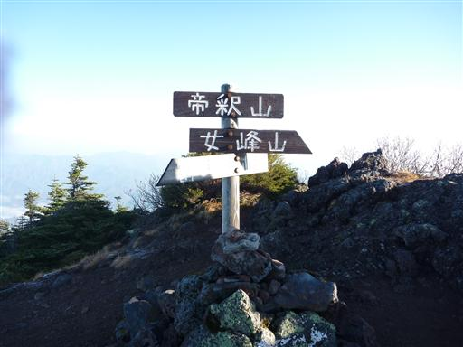
ここまで来ると西側の展望が広がる。左が小真名子山、右が太郎山。
ぽこぽことドーム状の山が点在する面白い景観だ。
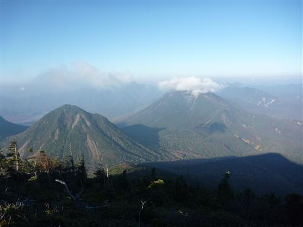
尾瀬方面の展望。目立った山は近くに無いが遠くの方には燧ヶ岳がはっきりと見える。
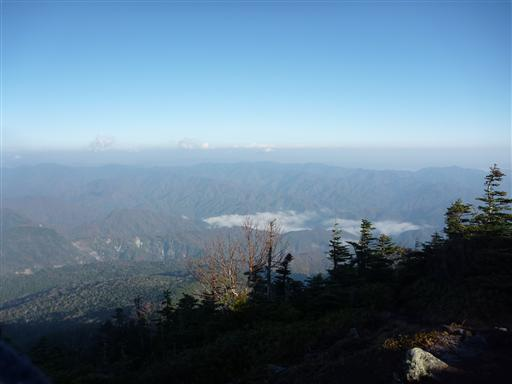
帝釈山を一気に下山し、小真名子山との鞍部に下りてくる。
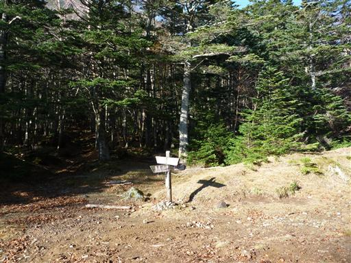
ここには荒れた林道が通っていて、志津乗越に続いている。
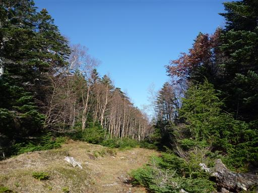
本日はここから下山せず、小真名子山、大真名子山を経由する予定。
まずは目の前の小真名子山目指してガレ場の急斜面を登っていく。
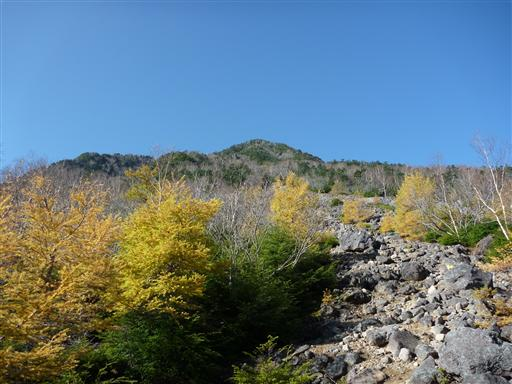
急な登山道を登っていくと程なくして山頂付近に到達する。
大きな電波反射板があり、展望が良いのでここで休憩することにする。
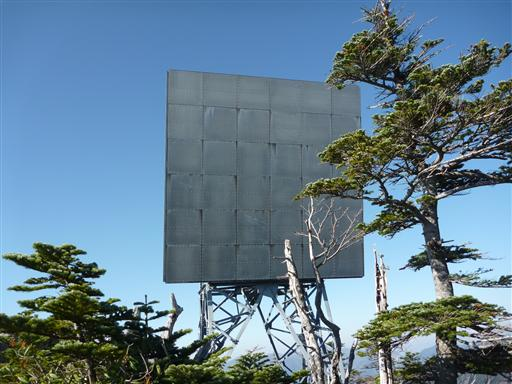
目の前には間近に太郎山が見えている。
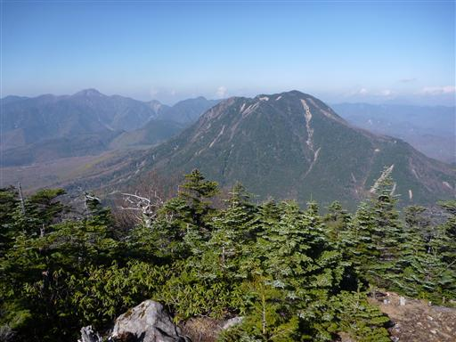
その左には関東最高峰の日光白根山が聳える。
この山は日光の奥地にある山で、群馬県側からもよく登られている。
ロープウェイがあるので、初心者でも登りやすい山だ。
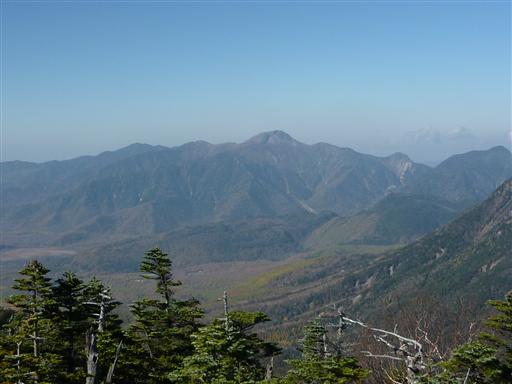
電波反射板から少し行ったところに小真名子山の山頂がある。
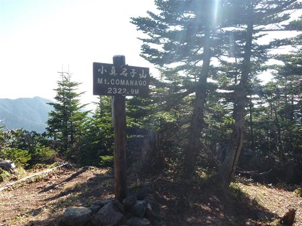
下山道からは幾つもの山々が折り重なって見える。
ここまで山が多いと山座同定は困難だ。

ドーム状の火山のため、登りも下りも急斜面が続く。
斜面を一直線に下っていく。
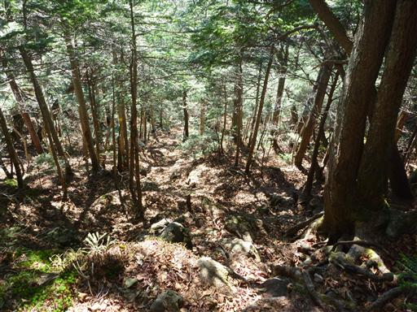
タカノ巣と呼ばれるところに到着。ここは小真名子山と大真名子山の鞍部だ。
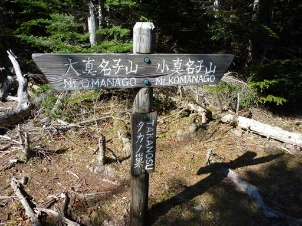
ここに峠道は無く、針葉樹林に覆われた静かで良い雰囲気の場所だ。
ここからまた大真名子山の登りに入っていく。
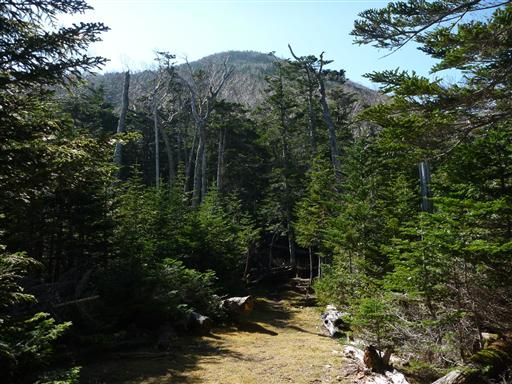
青空が広がる気持ちの良い登山道を歩いていく。
10時を過ぎてぽかぽか陽気になってきた。
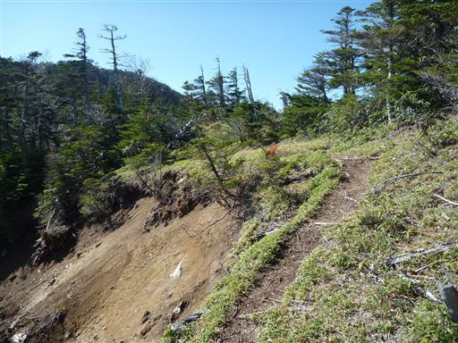
10:40 大真名子山山頂到着。標高2375m。
真名子は愛子の意味らしい。
これで父親の男体山、母親の女峰山、子供の太郎山、大真名子山、小真名子山と
日光ファミリーの山は全て制覇した。登ったのは全て今年だ。
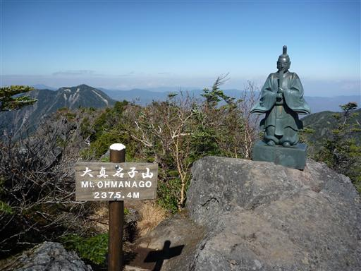
眼下には大きな戦場ヶ原が広がっている。
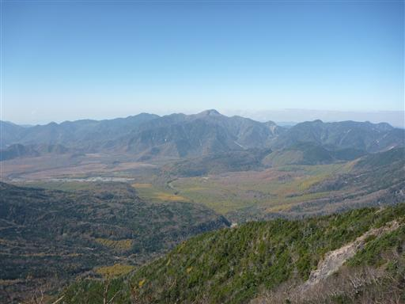
背後には今朝歩いてきた女峰山。
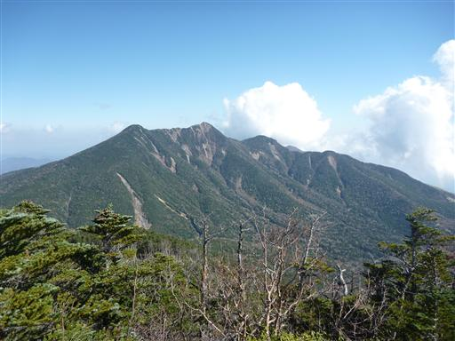
そして、これから進む真正面には男体山が堂々と聳えている。
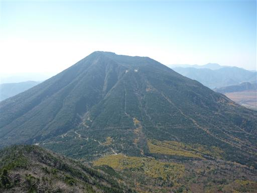
大真名子山からの下りは少しだけ鎖場がある。
特に難しい鎖場ではないが、登山道に変化が出るので、こういう道は歓迎だ。
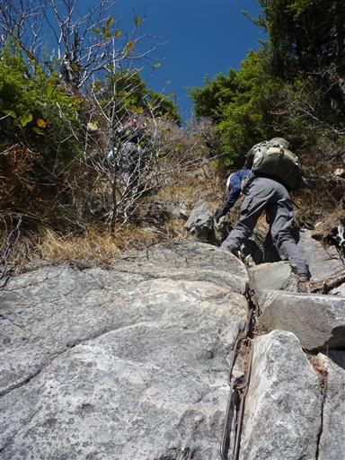
大真名子山と男体山の鞍部である志津乗越に到着。
ここまではマイカーで入ることができる。
今年の夏はここから男体山を往復した。
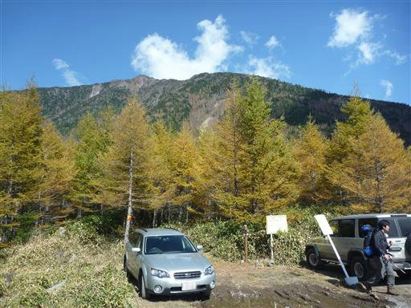
今回は縦走登山なので、ここから2時間程度車道を歩く必要がある。
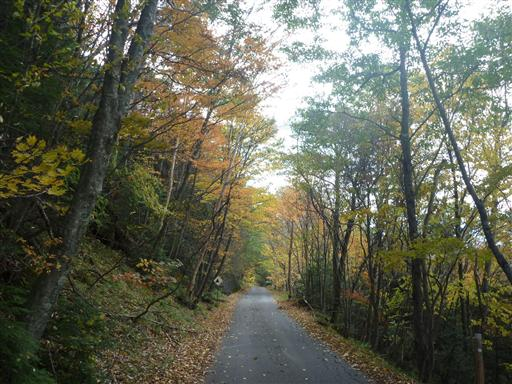
空にはクラゲのような形の不思議な雲が浮かんでいる。
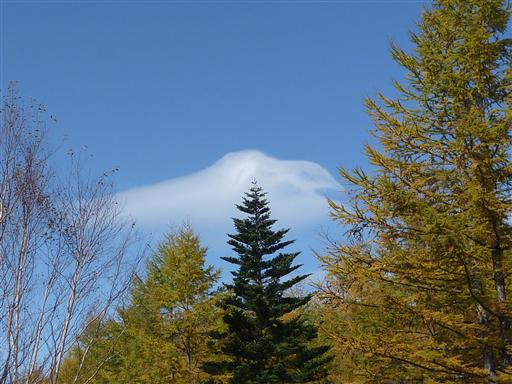
右手には大真名子山が大きい。山腹は鮮やかに色付いている。
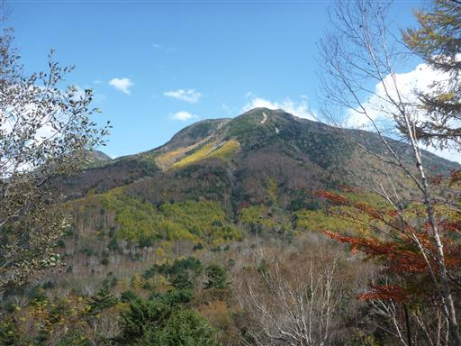
長い車道歩きだが、美しい紅葉を眺めながら歩いてると、さほど苦にならない。
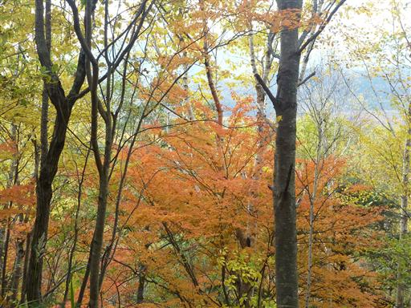
日光の中でもこの辺りは特に紅葉がきれいだ。
三脚を構えているカメラマンもいる。
日光中心部に比べるとこの辺りはほとんど観光客がおらず、静かで良い。
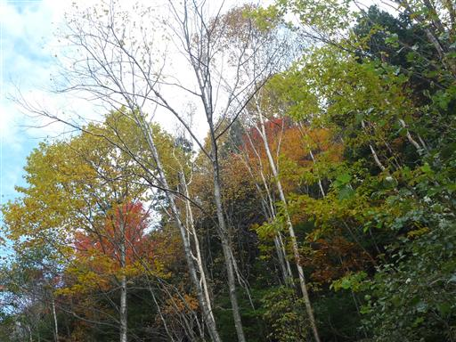
14:07 三本松バス停到着。標高1395m。
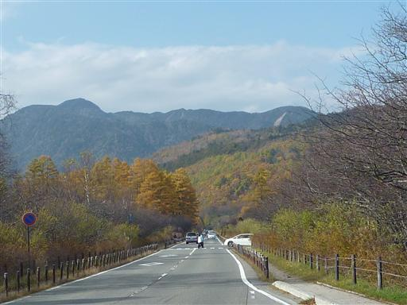
ここには三本松の茶屋がある。背後には男体山が聳えるなかなかのロケーションだ。
茶屋で少し休憩しようと思ったが人人人の大混雑。
さすがは紅葉の時期の日光だ。
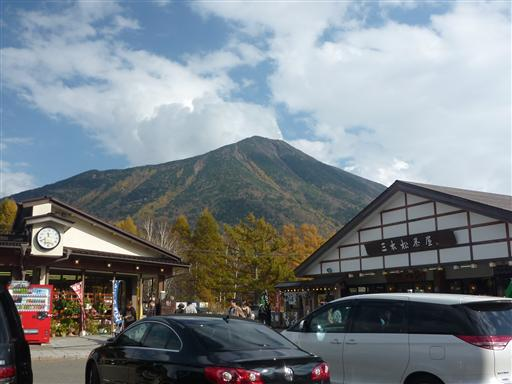
帰りのバスに乗っていろは坂を下っていく。道は大混雑、バスも大混雑だ。
女峰山は思い入れのある山で、何としても晴れの日に登りたいと思っていたが、
絶好の晴天に恵まれ、紅葉も素晴らしく、良い山行だった。
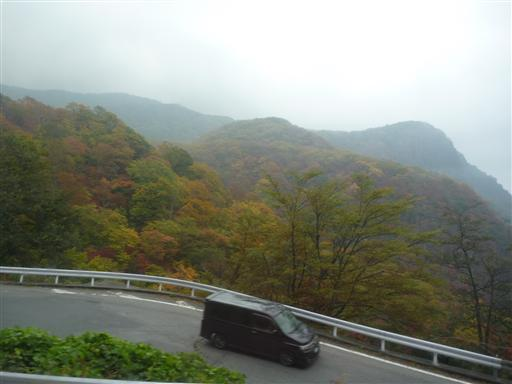